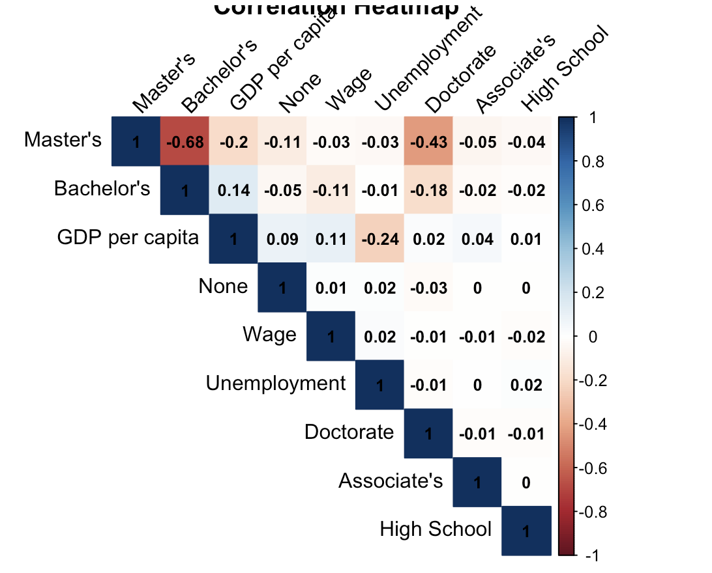
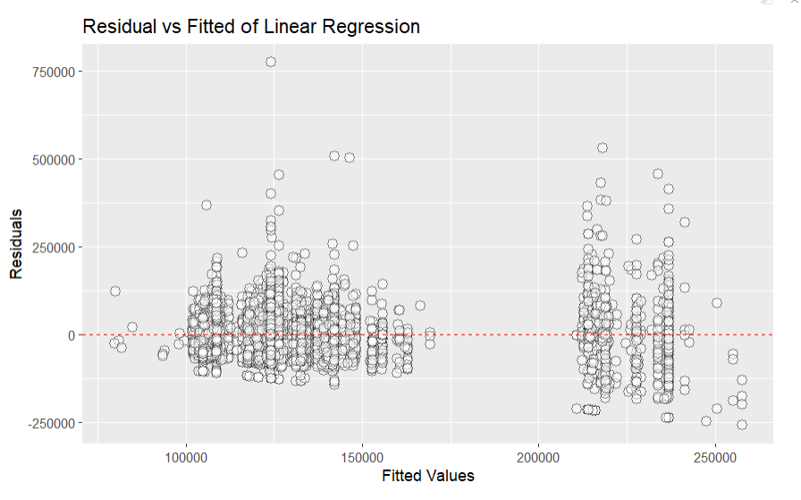
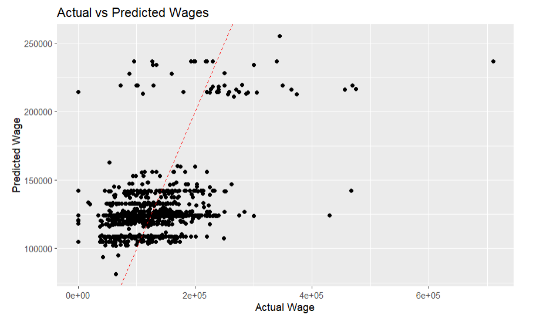
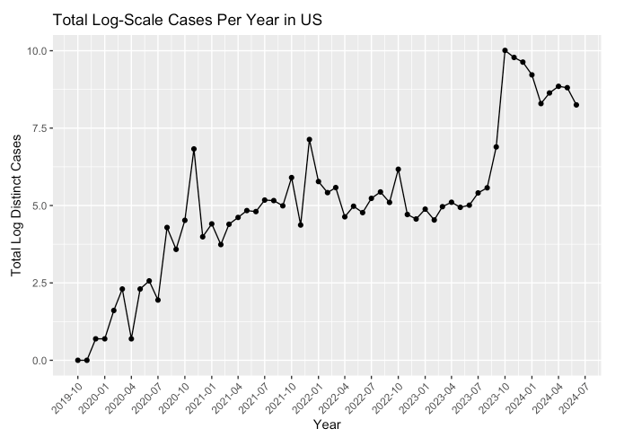
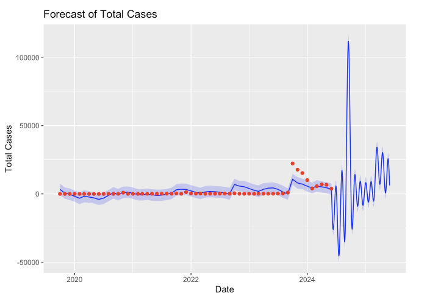

Analysis
Motivation for Data Analysis
Our data analysis seeks to achieve an understanding of how and why H1-B applications vary across countries, continents, and time. We are interested in the number of applications from each country and/or continent, the wages of the recipients, the level of education that the applicants have achieved, and the financial information from their country of citizenship. We are interested in answering how the distribution of H1-B applicants has changed throughout time, whether education level and wage are correlated, and how that has changed, as well as whether the financial standing of a country is correlated with the number of citizens applying for an H1-B visa.
Modeling and Inference
- The page will include some kind of formal statistical model. This could be a linear regression, logistic regression, or another modeling framework.
- Explain the ideas and techniques you used to choose the predictors for your model. (Think about including interaction terms and other transformations of your variables.)
Linear Modelling
First, the Perm Disclosure datasets for 2023 and 2024 are joined with IMF GDP and Unemployment rates by country. The education level of an applicant is made into a categorical variable, and the correlation between variables can be represented in the following correlation matrix. 
With the information from this correlation matrix, an initial linear regression model of Wage ~ GDP per Capita + Unemployment can be built. A naive implementation of the model would be strongly influenced by an outlier in the data, which can be detected using Cook’s distance formula. Nigeria, which has an average H1-B applicant wage of $6,524,999, a GDP of 1945.012, and an unemployment rate of 22.6, has a Cook’s distance more than 3 times the average.
Reference to cooks-distance
After removing this outlier, the dataset is split 90/10 into training and test sets, and the linear regression model is built on the training set. Test set will be used to evaluate the error on unseen data.
On the training set, the linear model has the following statistics:
Residual standard error: 50400 on 13467 degrees of freedom
Multiple R-squared: 0.1771,
Adjusted R-squared: 0.1766
F-statistic: 362.2 on 8 and 13467 DF,
p-value: < 2.2e-16Interpretation
The Residual standard error indicates that the information provided by the GDP per capita and Unemployment of a country can predict the average wage of an H1-B recipient from that country with an average error of $50,400. A Mutliple R-squared of 0.1771 suggests that about 17.7% of the variability in the wage of H1-B recipients from a country can be explained by the GDP and Unemployment of that country. Despite the fact that these values show that there is a lot of variability in wages not explained by the model, a p-value less than 0.05 leads to the conclusion that the model is statistically significant.
This plot shows that the fitted values of the model have residuals that are generally concentrated around the Residual = 0 line, but are not exactly aligned with it. This is consistent with the RSE and Multiple R-squared values.

Interpretation of the model
The model’s predictive performance of the testing set has a RSME of 48892.1392, due to the assumption that linear regression assumes the data to have linear relationship. However, in real setting, most of the real world dataset is nonlinear. To obtain a lower root square mean error, we would need a robust machine learning model or transform some of the features.
Time Series Forcasting

The graph illustrates the total number of H1B applications from 2020 to 2024, providing valuable insights for prospective H1B applicants regarding near-future trends.
To project the volume of H1B applications for the year 2025, Prophet time series model was used. This approach was chosen due to its effectiveness in capturing data with inherent seasonality, which is common in industries where companies often undergo significant hiring cycles, typically peaking in the fall when budget allocations are highest. 
Interpretation
The forecast plot reveals promising prospects for prospective applicants, indicating the potential for a surge in hiring activities. The shaded regions delineate the upper and lower bounds of the forecast, offering a range within which the actual number of applications may fall.
This forecast holds significant implications for potential H1B applicants. Understanding these anticipated trends can inform strategic decision-making processes, ensuring proactive measures are taken to address potential challenges or capitalize on emerging opportunities.
Limitation
The Prophet time series model is well-suited to analyze this dataset as it focuses on univariate time series data. However, it’s worth noting that the model may not effectively account for multiple correlated time series.
The year 2021 stands out as an outlier due to the unprecedented impact of the COVID-19. This global event significantly disrupted normal hiring patterns and economic activity, influencing the performance of forecasting models.
Reference to Meta’s algorithm
https://facebook.github.io/prophet/